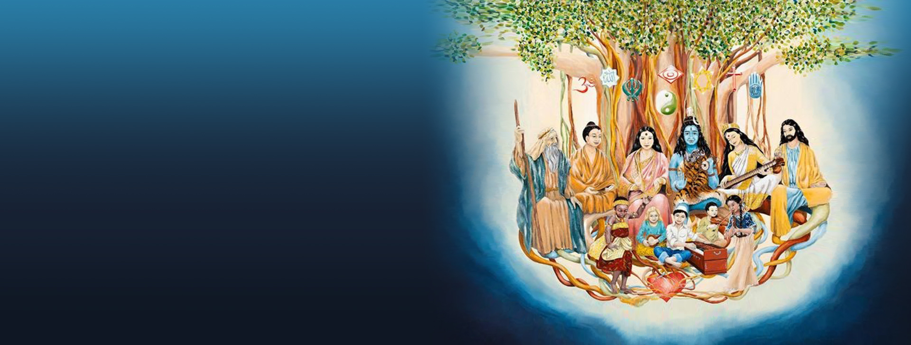

مدیتیشن ساهاج، آسان، منحصر به فرد، اصیل، ریشهدار و در عین حال بسیار مدرن است.
مدیتیشن ساهاج، استثناییترین و آسمانیترین یوگا است که ریشه در قلب انسانها دارد
مدیتیشن ساهاج، کلمه باستانی یوگا را با بودن در زمان حال عینیت بخشیده

مدیتیشن ساهاج، برای همه انسانها تجربه مکاشفات قدیسین گذشته را بدون هیچ ریاضتی امکانپذیر کرده است.
در مدیتیشن ساهاج، قدرت کندالینی به راحتی و بدون پرداخت هیچ هزینهای بیدار میشود و انسان به فردی خودآگاه تبدیل میگردد.
پس از آن با دو نیروی آرزوی پاک و توجه پاک، انرژی کندالینی، خود به خود، کانالها و چاکراها را پاک و متعادل میکند.
فرد خودآگاه با بودن در لحظه حال و سکوت فکر، به سرچشمه قدرت و دانش الهی متصل و از آن تغذیه میشود.
فرد خودآگاه میتواند ارتعاشات عشق الهی را بر دستان و بالای سر خود احساس کند.
فرد خودآگاه با اتصال به دانش پاک الهی و دریافت ارتعاشات و شهود و الهامات، میتواند خیر را از شر و درست را از غلط باز شناسد.
مدیتیشن ساهاج باعث رشد فردی و سلامت جسم و روح میشود.
انسان خودآگاه در تمامی ابعاد اجتماعی، تاریخی، فرهنگی و علمی، بصیرت پیدا میکند.
بصیرت حاصل از ساهاجایوگا در تمامی افراد خودآگاه جهان یکسان است.
بزرگترین مزیت ساهاجایوگا، عملی و آزمون پذیر بودن آن است.
مدیتیشن ساهاج رضایتمندی کامل را به انسانها عطا میکند و هر کس میتواند با آنچه در اختیار دارد، خوشبختی کامل را احساس نماید.
با مدیتیشن ساهاج، فرد خودآگاه اخلاق جمعیتری پیدا میکند و با قدرت توجه پاکش به رفع مشکلات دیگر انسانها نیز کمک خواهد کرد.